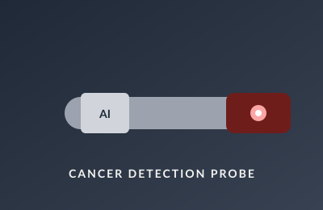

Overview
As a Research Assistant in the LSU Biomedical Engineering Device Lab, I am developing a handheld, AI-powered deep-tissue cancer detection probe. The goal is to give clinicians a single, ergonomic device that can be activated with one hand and produce reliable tissue readings during a routine diagnostic flow.
My Role
- Designing the physical housing and ergonomics of the device in Fusion 360, with a focus on a secure, fatigue-free grip for extended clinical use.
- Leading mechanical design with five other lab members and integrating a one-touch activation mechanism for streamlined operation.
- Coordinating mechanical and electronic integration — designing sensor housings to ensure precise alignment and reliable signal acquisition.
- Running prototype testing with user-simulation trials to optimize maneuverability and reduce operator fatigue.
Why It Matters
Diagnostic devices live or die by their human factors. A probe that fatigues the clinician or misaligns the sensor introduces noise into the AI model behind it. Iterating on grip geometry, button placement, and sensor seating is what makes the difference between a research prototype and a tool a physician will actually pick up.
Skills Practiced
Fusion 360 parametric CAD, user-simulation testing, cross-functional collaboration with electronics and software teammates, and design-for-manufacturing for medical hardware.
← Back to projects